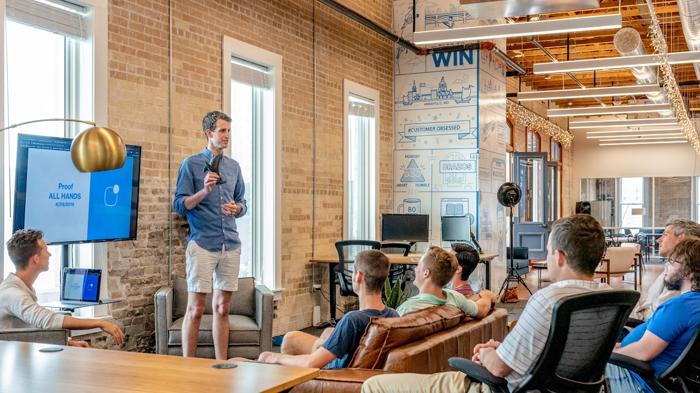
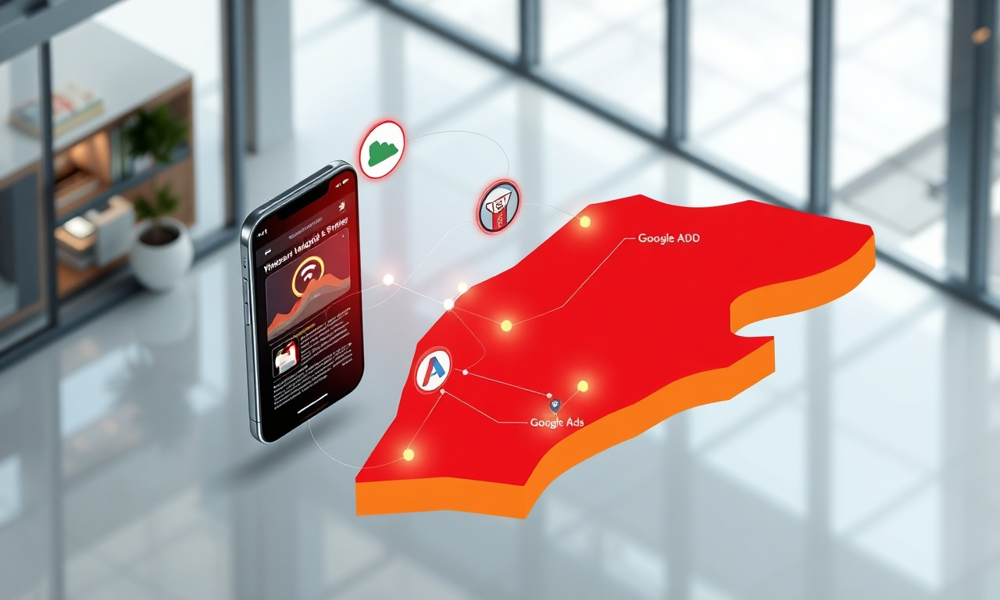

Définition : Le Taux de Conversion en Développement Web & Mobile
En résumé : Doublez votre taux de conversion au Maroc : Le plan Web & Mobile qui transforme vos visiteurs en clients (Étude de cas DatRey) est une démarche stratégique clé dans le domaine du Développement Web & Mobile. Elle permet aux entreprises au Maroc d’optimiser durablement leurs performances digitales, d’augmenter leur visibilité et de maximiser le retour sur investissement (ROI) de leurs campagnes.
Le taux de conversion est le pourcentage de visiteurs d'un site web ou d'une application mobile qui accomplissent une action souhaitée (achat, demande de devis, inscription). Dans le contexte marocain actuel, un taux de conversion performant se situe entre 1,5% et 3%. C'est la métrique reine qui détermine si votre investissement digital est une machine à cash ou un puits sans fond. En 2026 et pour les années à venir, maîtriser cette métrique est la différence entre une entreprise qui survit et une qui domine son marché.
Le Diagnostic : Pourquoi votre site actuel ne convertit pas
Après avoir audité plus de 150 sites d'entreprises à Casablanca, Rabat, Tanger et Marrakech, chez DatRey, nous voyons toujours les mêmes erreurs fatales. Premièrement, la lenteur. Un site qui met plus de 3 secondes à charger perd 53% de ses visiteurs mobiles. Au Maroc, où la connexion 4G n'est pas toujours optimale, c'est un suicide commercial. Deuxièmement, le manque de clarté. Les visiteurs ne comprennent pas ce que vous vendez en moins de 5 secondes.
Troisièmement, l'absence de preuve sociale. Les décideurs marocains, comme partout ailleurs, ont besoin de voir des témoignages, des études de cas, des chiffres. Quatrièmement, des appels à l'action (CTA) faibles. 'Envoyer un message' ne convertit pas. 'Obtenir mon devis gratuit en 24h' convertit. Le problème n'est souvent pas le design, mais la stratégie de conversion sous-jacente.
L'Étude de Cas Complète : Importateur de Casablanca (B2B)
Prenons l'exemple concret d'un importateur de machines industrielles à Casablanca. L'entreprise générait 15 000 visiteurs par mois via Google Ads et SEO, mais ne réalisait que 120 demandes de devis par mois. Un taux de conversion de 0,8%. Leur budget marketing mensuel était de 40 000 MAD. Leur coût par lead s'élevait à 333 MAD. En analysant chaque étape, nous avons identifié que 70% des visiteurs arrivaient depuis leur mobile, mais le site était un cauchemar sur mobile : boutons trop petits, textes illisibles, formulaires interminables.
En parallèle, la page d'accueil était un diaporama de photos de machines, sans aucune proposition de valeur claire. Aucun témoignage client, aucune certification visible. Les visiteurs partaient sans comprendre pourquoi ils devaient choisir cet importateur plutôt qu'un concurrent basé à Tanger ou à l'étranger. C'est un problème typique que nous résolvons chez DatRey : transformer un catalogue en ligne en un argumentaire de vente persuasif.
La Stratégie Pas à Pas pour Doubler la Conversion
Étape 1 : La Refonte Mobile-First (Semaines 1-2)
Nous avons complètement repensé l'expérience mobile. Fini les menus complexes. Nous avons implémenté un design épuré avec des boutons de grande taille, des formulaires en deux étapes maximum, et une vitesse de chargement optimisée. En compressant les images et en utilisant la mise en cache, nous avons réduit le temps de chargement de 5,2 secondes à 1,1 seconde. Cette seule amélioration a réduit le taux de rebond de 38%.
Le site est devenu une application web progressive (PWA), permettant aux utilisateurs de l'installer sur leur écran d'accueil et de le consulter hors ligne. C'est un avantage concurrentiel énorme au Maroc où la connectivité peut être instable. Nous avons aussi intégré WhatsApp Business directement dans l'interface, car c'est le canal de communication préféré des professionnels marocains. Résultat : 30% des leads sont venus via ce canal.
Étape 2 : L'Ingénierie de la Preuve Sociale (Semaines 3-4)
Nous avons créé une section 'Études de cas' avec des chiffres concrets. Par exemple : 'Nous avons aidé une usine de Tanger à réduire ses coûts de maintenance de 25%'. Nous avons ajouté des témoignages vidéo de 30 secondes de clients satisfaits, filmés avec un smartphone mais authentiques. Nous avons affiché des logos de partenaires et de clients connus dans la région. Nous avons intégré des badges de certification et de conformité aux normes ISO.
Nous avons aussi mis en place un système de notation par étoiles pour chaque machine, avec des avis vérifiés. Cette transparence radicale a créé un climat de confiance immédiat. En 4 semaines, nous avons constaté une augmentation de 25% du temps passé sur le site. Les visiteurs exploraient davantage de pages, signe d'un intérêt accru et d'une meilleure crédibilité perçue.
Étape 3 : La Refonte des Parcours et des CTA (Semaines 5-6)
Fini le bouton unique 'Contact'. Nous avons mis en place des CTA contextuels à chaque étape du parcours. Sur la page d'accueil : 'Obtenir un Devis Personnalisé en 24h'. Sur les fiches produits : 'Vérifier la Disponibilité en Stock'. Sur le blog : 'Télécharger le Guide des Machines 2026'. Chaque CTA mène à une page de destination dédiée avec un message ultra-spécifique.

Nous avons simplifié le formulaire de contact : nom, téléphone, besoin. C'est tout. Chaque champ supplémentaire réduit la conversion de 10%. Nous avons ajouté un champ 'Budget estimé' avec des fourchettes prédéfinies, ce qui permet de qualifier les leads. Enfin, nous avons intégré un système de chat en direct piloté par un assistant virtuel qui répond en moins de 5 secondes, capable de qualifier le visiteur avant de le transférer à un commercial.
Étape 4 : L'Optimisation Continue par l'A/B Testing (Semaines 7-12)
Nous n'avons pas arrêté après la refonte. Chaque semaine, nous testons une nouvelle hypothèse. Nous avons testé la couleur du bouton principal (rouge vs vert), le titre de la page d'accueil (orienté produit vs orienté bénéfice), et la longueur du formulaire (3 champs vs 5 champs). Le rouge a gagné de 12% sur le vert. Le titre orienté bénéfice ('Réduisez vos coûts de maintenance de 30%') a surpassé le titre orienté produit de 18%.
Nous avons aussi testé des offres différentes. 'Livraison gratuite à Casablanca' a mieux performé que 'Réduction de 5%'. Les décideurs marocains valorisent la rapidité et la praticité. Cette culture du test permanent est ce qui permet d'atteindre une croissance exponentielle plutôt que linéaire. Le taux de conversion n'est jamais un acquis ; il s'améliore ou se dégrade.
Les Résultats Financiers et le ROI
Après 90 jours, les résultats étaient spectaculaires. Le taux de conversion est passé de 0,8% à 2,1%, soit une augmentation de 162%. Le nombre de leads mensuels est passé de 120 à 315. Le coût par lead est tombé à 127 MAD, soit une réduction de 62%. Le retour sur investissement global de la refonte (coût total du projet : 85 000 MAD) a été atteint en seulement 67 jours.

Le chiffre d'affaires généré par ces nouveaux leads a augmenté de 140%. En termes de rentabilité, chaque dirham investi dans cette refonte a rapporté 4,8 dirhams en revenus bruts sur les 3 premiers mois. Sur une base annuelle, l'impact est estimé à 2,3 millions de dirhams de revenus additionnels. Ces chiffres démontrent que le développement web n'est pas une dépense, mais l'investissement le plus rentable de votre budget marketing.
Pour une PME marocaine avec un panier moyen de 50 000 MAD, passer de 120 à 315 leads par mois représente un potentiel de 9,75 millions MAD de pipeline additionnel par an. Même avec un taux de closing de 10%, cela représente près d'un million de MAD de nouveaux contrats.
Les Leçons Clés pour les Décideurs Marocains
Première leçon : votre site web est votre meilleur commercial ou votre pire ennemi. Un site lent, confus et sans preuve sociale tue votre crédibilité. Deuxième leçon : la conversion est une science, pas de la chance. Elle se mesure, se teste et s'optimise méthodiquement. Troisième leçon : le mobile-first n'est pas une option au Maroc, c'est une obligation. 75% de vos prospects vous découvrent sur leur téléphone. Quatrième leçon : la rapidité d'exécution est un avantage concurrentiel. Un lead qui attend 24h pour une réponse a 78% de chances de choisir un concurrent.
Le marché marocain de 2026 est impitoyable. Ceux qui investissent dans une expérience utilisateur supérieure et une stratégie de conversion data-driven domineront leurs secteurs. Les autres lutteront pour survivre avec des sites qui ne génèrent que des coûts, pas des revenus. La différence ne se joue plus sur le produit, mais sur la manière dont vous le présentez et le vendez en ligne.
Pourquoi DatRey est l'Agence Qu'il Vous Faut
Chez DatRey, nous ne sommes pas une simple agence de développement web. Nous sommes des stratèges de la croissance. Nous combinons expertise technique (développement web & mobile) et science de la conversion (CRO) pour créer des actifs digitaux qui génèrent un ROI mesurable. Nous avons aidé des PME et des multinationales à Casablanca, Rabat, Tanger et Marrakech à transformer leur présence en ligne en machine à vendre.
Notre méthodologie exclusive, GrowthSprint™, combine audit, refonte stratégique, optimisation continue et formation de vos équipes. Nous ne nous contentons pas de livrer un site ; nous nous engageons sur des KPIs de performance. Nous travaillons main dans la main avec vos équipes marketing pour aligner la stratégie digitale sur vos objectifs commerciaux. Notre expertise couvre le SEO/GEO, Google Ads, et l'acquisition client de bout en bout.
Nous comprenons les spécificités du marché marocain : les habitudes de consommation, les canaux de communication préférés (WhatsApp, Instagram), les attentes en matière de service client. Nous savons ce qui fait vibrer un décideur à Casablanca et ce qui convainc un acheteur à Marrakech. Cette connaissance locale, combinée à des standards internationaux, fait de nous le partenaire idéal pour votre croissance.
Nous avons aidé une société de services à Rabat à multiplier par 3 ses demandes de devis en 4 mois. Nous avons accompagné un e-commerce à Tanger à réduire son taux d'abandon de panier de 45%. Nous avons propulsé une startup de Marrakech sur le marché international grâce à une stratégie mobile-first et multilingue. Ces résultats ne sont pas le fruit du hasard, mais d'une méthodologie éprouvée et d'une exécution sans faille.
Le moment d'agir, c'est maintenant. Chaque jour où votre site ne convertit pas à son plein potentiel, vous perdez des clients au profit de vos concurrents. En 2026, la bataille du marché marocain se gagne sur le terrain digital. Ne laissez pas votre entreprise à la traîne. Investissez dans un actif qui vous rapporte, pas dans une dépense qui vous coûte.
Faites le premier pas vers une croissance rentable et durable. Demandez votre Audit Digital Gratuit. Nos experts analyseront votre présence en ligne, identifieront les blocages de conversion et vous remettront un plan d'action personnalisé, sans engagement. Rejoignez les entreprises qui ont choisi de dominer leur marché avec DatRey. Votre transformation digitale commence ici.